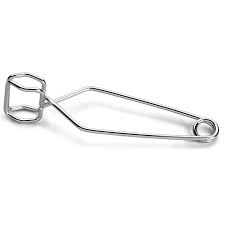

Beaker Holds liquids; Used for heating liquids; Not a measuring device.
Container for reactions.
Holds test tubes.
Used to measure volumes.
For crushing solids.
Attaches to ring stand; Supports flasks/test tubes.
Used to support funnels and wire gauze/beakers.
Used as a support; Rings and clamps attach to the stand.
Used to transfer solids.
Used to evaporate liquids from a mixture.
Liquid transfer; Separation techniques.
For heating small amounts at high temperatures.
Used as a cover or sample plate
Used to agitate liquids or mixtures.
Used to clean glassware.
Wire Gauze Support used to hold glassware when being heated.
Used as a support for funnels and crucibles.

Used to light a Bunsen Burner.
For heating and holding reactions.
Used for holding test tubes when heating or pouring items.
- 
Used for picking up hot crucibles, wire gauze and small evaporating dishes; for holding items in flame.
Used for picking up beakers, large crucibles, large evaporating dishes, etc.
Gas and air are mixed in it and then burned to produce a flame.
Used to measure temperature.
Used to measure mass. Mass is the amount of matter in something. It works electronically.
Used to heat materials.
Equipment that should be used whenever eye injury might occur.
A laboratory tool commonly used in chemistry, biology and medicine to transport a measured volume of liquid, often as a media dispenser.